.svg "Houston Rockets Logo")
.svg "Brooklyn Nets Logo")
.svg "Cleveland Cavaliers Logo")
.svg "Atlanta Hawks Logo")
.svg "Philadelphia 76ers Logo")
.svg "Indiana Pacers Logo")
.svg "Washington Wizards Logo")
.svg "Detroit Pistons Logo")
.svg "New York Knicks Logo")
.svg "Chicago Bulls Logo")
.svg "San Antonio Spurs Logo")
.svg "Golden State Warriors Logo")
.svg "Sacramento Kings Logo")
.svg "Denver Nuggets Logo")
.svg "Utah Jazz Logo")
.svg "Memphis Grizzlies Logo")
.svg "Dallas Mavericks Logo")
.svg "New Orleans Pelicans Logo")
.svg "Los Angeles Lakers Logo")
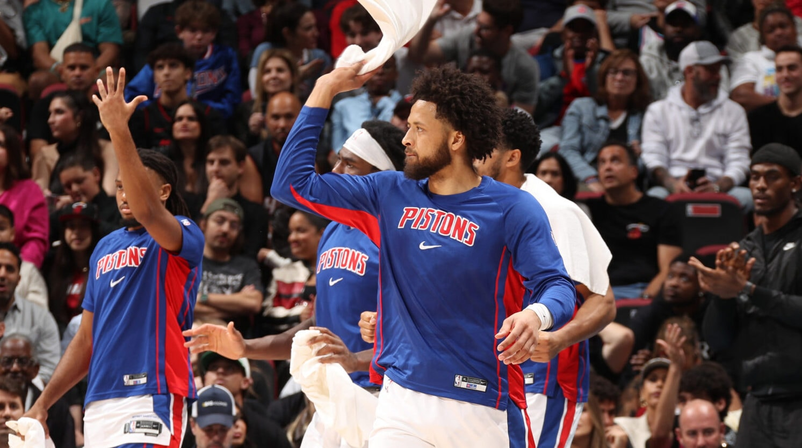
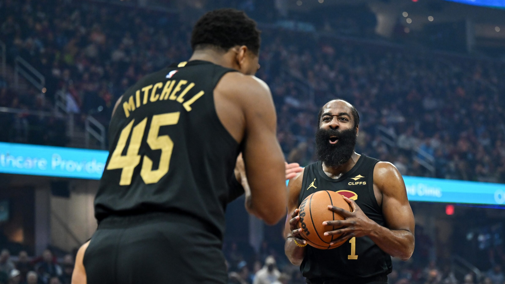
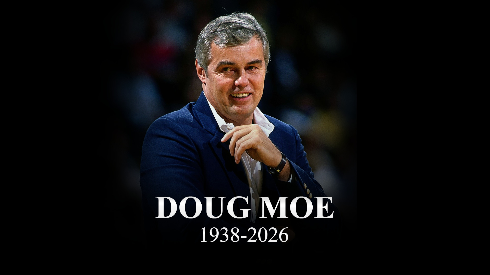
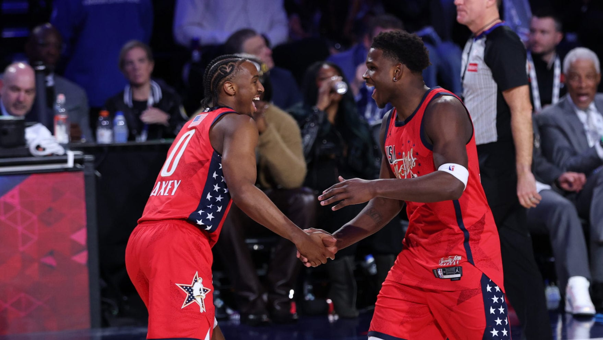
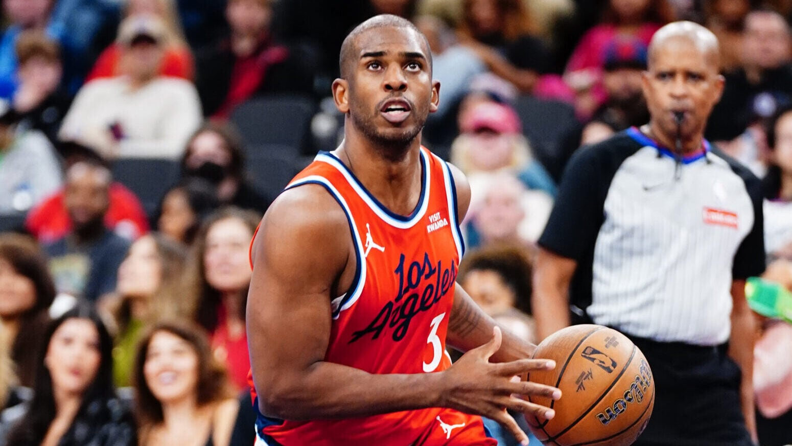
Power Rankings: Pistons, Spurs lead after All-Star
The season is 67% complete, teams have an average of 27 games remaining, and the home stretch begins on Thursday.
10 storylines to follow after All-Star break
Here are 10 things that could happen, or not, in the final weeks of the season.
Doug Moe, former Coach of the Year, passes away
The innovative coach won NBA Coach of the Year with Denver in 1988 and ranks 2nd in franchise history with 432 wins.
Best moments from All-Star Weekend in Los Angeles
Look back at the must-see highlights and star-studded performances from NBA All-Star 2026 in Los Angeles.
Chris Paul leaves lasting legacy on basketball
The tenacious point guard became an NBA legend with a combination of skills, intelligence and determination.
Next: Power Rankings: Pistons, Spurs lead after All-Star
Next: 10 storylines to follow after All-Star break
Next: Doug Moe, former Coach of the Year, passes away
Next: Best moments from All-Star Weekend in Los Angeles
Next: Chris Paul leaves lasting legacy on basketball
Stories
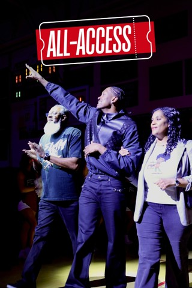
newJDub Gets His High School Jersey Retired 🙌
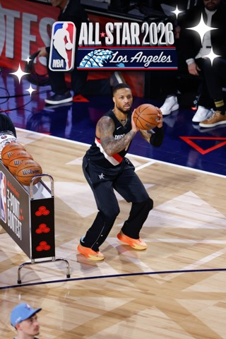
newAll-Star Weekend Recap In Photos ⭐️📸
new
Former NBA Coach Doug Moe Passes Away At 87
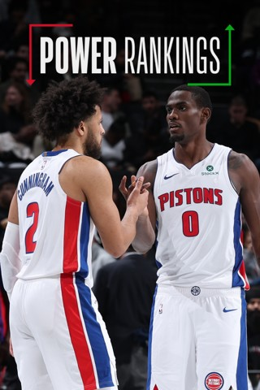
newPower Rankings, Week 18: The Home Stretch Begins
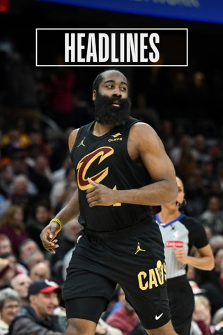
new10 Storylines To Follow During Stretch Run
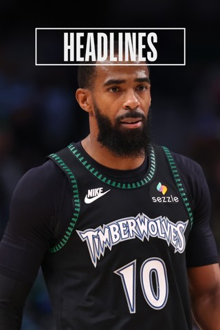
newWolves Sign Conley Jr. After Being Waived By Hornets
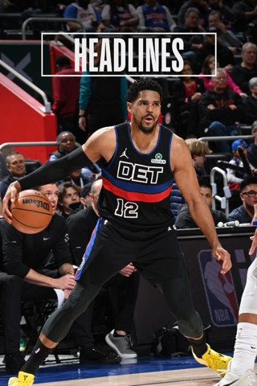
newPistons Enter Post All-Star Play With Best Record
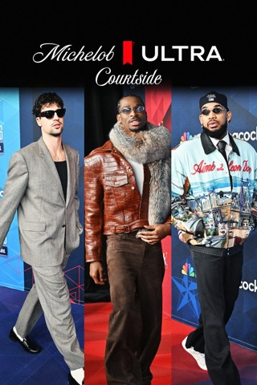
newULTRA Courtside Drip: Best Of All-Star
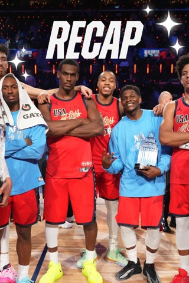
newEverything From All-Star Weekend ‼️
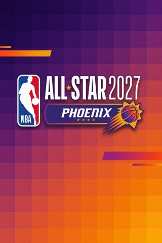
newNBA All-Star 2027 Is In Phoenix, Arizona ⭐
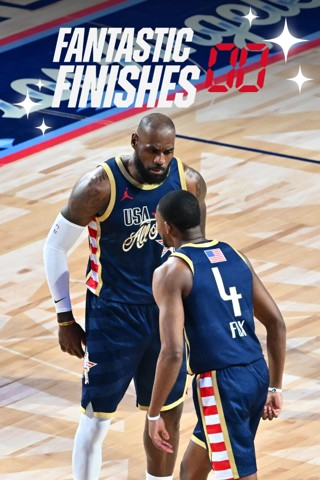
newFantastic Finishes: A Trio Of All-Star Thrillers
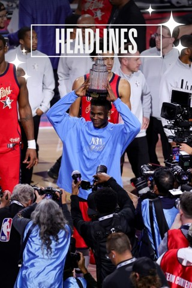
newNBA All-Star Audience Highest Since 2011
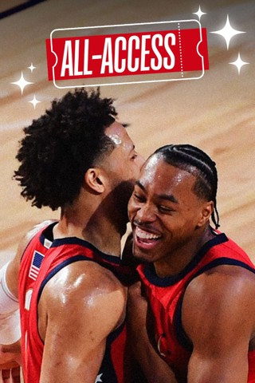
newAll-Star Sunday: USA Stars Win 75th NBA All-Star Game ⭐️
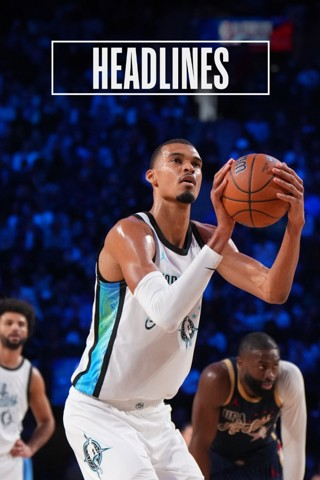
newThe Athletic: Wembanyama Furthers His Case As NBA's Next Face
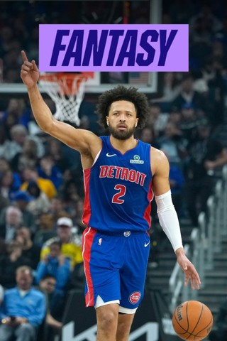
newHigh Score Top Lineup At The Break
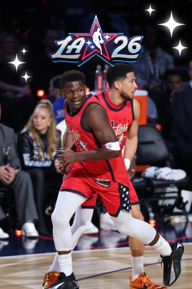
newAll-Around Action At All-Star Game 🔥
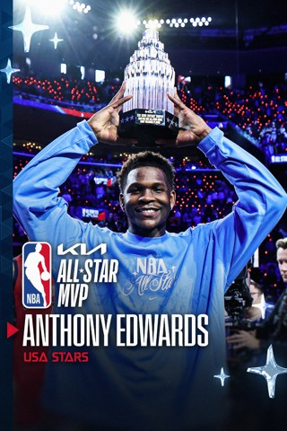
newAnthony Edwards Named Kia All-Star MVP 🏆
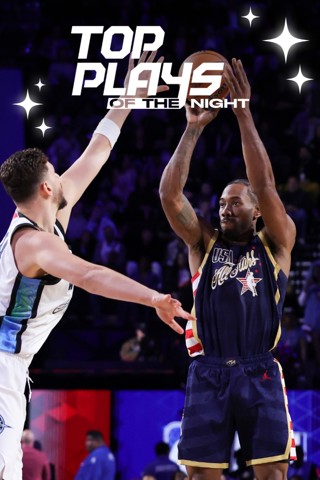
newUSA Stripes Top World In Game 3, Kawhi Erupts🔥
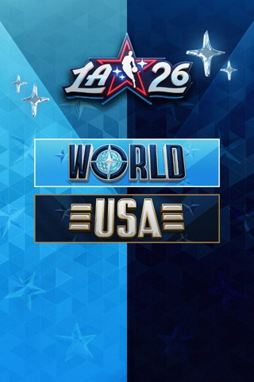
newWORLD vs STRIPES FEB 15 HIGHLIGHTS
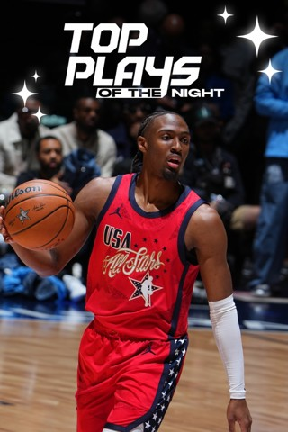
newAll-Star Championship: Best Plays 🤩
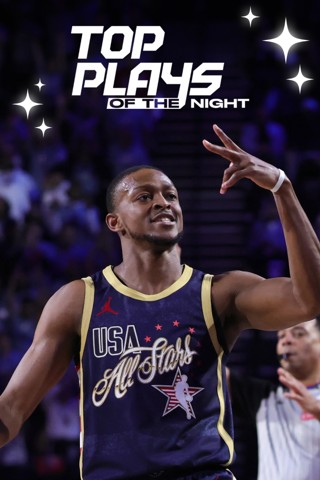
newUSA Stripes Defeat USA Stars In Game 2 🎬
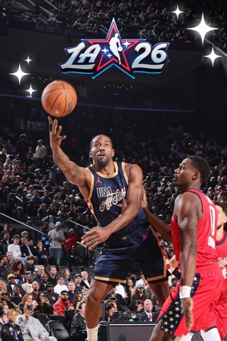
newKawhi Leonard Was On Fire 🔥
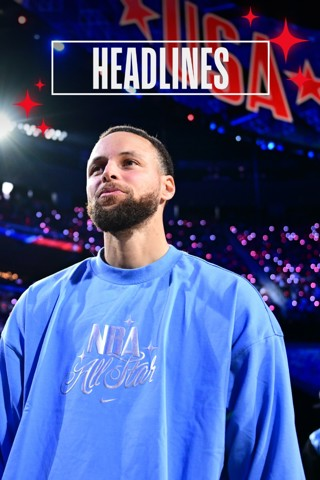
newCurry Commits To '27 State Farm 3-Point Contest
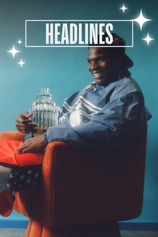
newAnt Takes Home Kobe Trophy As '26 All-Star MVP
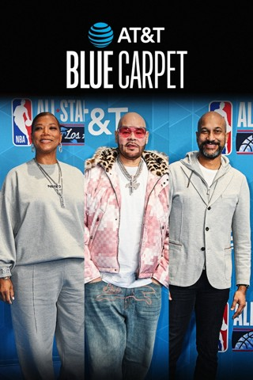
newAT&T Blue Carpet Best Dressed: 2026 ASG
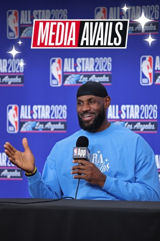
newLeBron James On The Mic Ahead Of All-Star Game 🎤
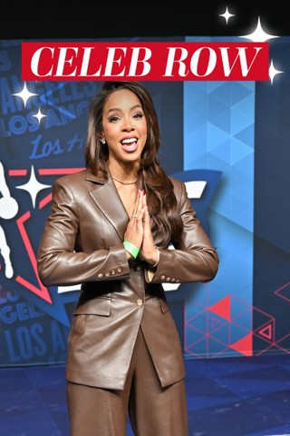
newThe Celebs Showed Out For All-Star Sunday ⭐
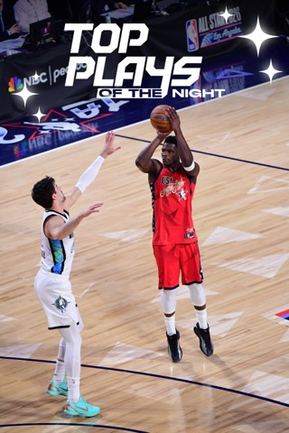
newUSA Stars Top World In Game 1 Thriller ⭐
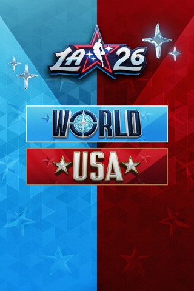
newWORLD vs STARS FEB 15 HIGHLIGHTS
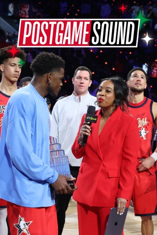
newSounds From All-Star Sunday 🔊
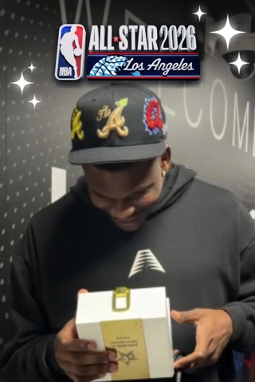
new2026 All-Stars Get Their Rings 💍
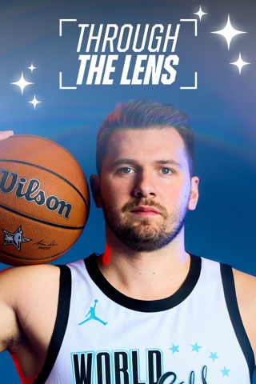
newAll-Star Portraits 📸
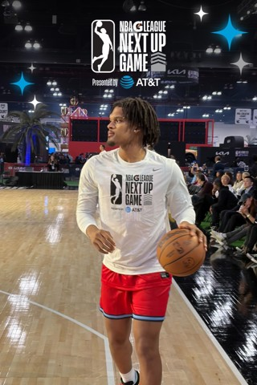
newInside G League Next Up Game 👀
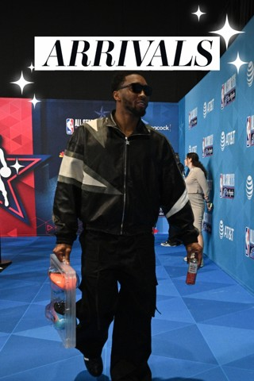
newFlicks From The Red Carpet 🤩
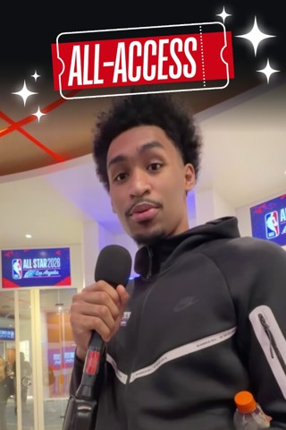
newPlayer Correspondent: Dylan Harper 🎤
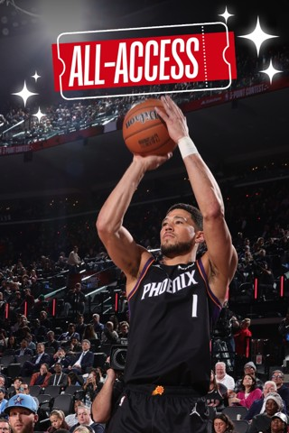
newInside All-Star Saturday 🌟
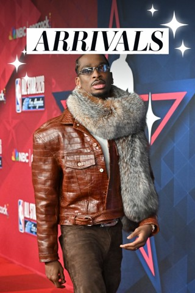
new2026 NBA All-Star Arrivals 📷
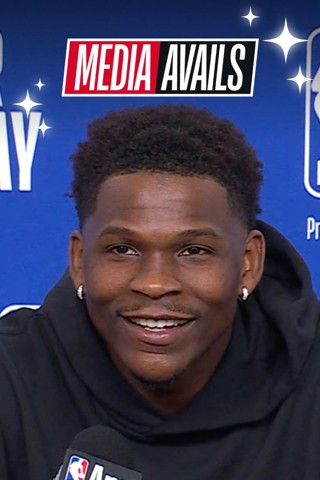
newFunniest Moments From Media Day 🤣
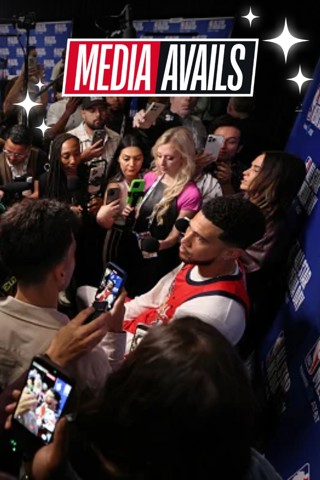
newUSA Stars Take The Mic At Media Day ⭐️
new
USA Stripes Hit The Mic On Media Day 🗣️
new
Team World Speaks At Media Day 🌎
new
Inside Media Day From NBA All-Star 📌
new
Johnson Wins 2026 AT&T Slam Dunk 🏆
new
AT&T Slam Dunk: Best Moments
new
Dame Wins 3-Point Contest AGAIN
new
Damian Lillard Makes 3-Point Contest History
new
State Farm 3-Point Contest Best Moments
new
2026 All-Star Saturday Recap 🎬
new
Team Knicks Win Kia Shooting Stars 💫
new
Best Moments From Kia Shooting Stars 🌠
new
Silver Expounds On Competition, Expansion & More
new
Stars Are Out At All-Star Saturday ⭐
new
Top Plays From Pre-2000 All-Star Games 🌟
new
2026 AT&T Slam Dunk In Slow Motion
new
All-Star Saturday In Photos 📸
new
Sounds From All-Star Saturday 🔊
new
Inside Nike Future Game At ASW ⭐
new
Duke Dennis At NBA Crossover 📲
new
Action-Packed All-Star Friday Night 🍿
new
Inside The Castrol Rising Stars Game 🤩
new
Team Vince Wins 2026 Rising Stars 🏆
new
Team Melo Beats Team Austin 🎬
new
2026 Ruffles All-Star Celebrity Game 💫
new
Star-Studded Celebrity Game 🌟
new
Celeb Game In Pics 📷
new
Castrol Rising Stars In Photos 📸
new
2026 Castrol Rising Stars Postgame Sound 🔊
new
Report: LaVine Undergoes Season-Ending Surgery
new
NBA Demos Live 'POV Mode' At Technology Summit
new
CP3 Leaves Lasting Legacy On Basketball
new
Chris Paul's Legendary Career 🏀
new
Rising Stars Media Day 🌟
new
Get The Most Out Of The App 📱
new
Wingstop Green Carpet's Best Dressed 🤩
new
BTS: Castrol Rising Stars Practice 👀
new
NBA All-Star Jr. NBA/WNBA Day 😁🏀
new
Bryant Replaces Coward In Rising Stars
new
Chris Paul Retires From NBA After 21 Seasons
new
CP3 Leaves Lasting Legacy On Basketball
new
All-Star Art Garden 🎨
new
Kia MVP Ladder: Who's No. 1 At All-Star break?
new
Trending Topics: Which Team Wins NBA All-Star Game?
new
Stars Prep For Ruffles Celebrity Game
new
Trending Topics: Picks For All-Star Saturday
new
Justin Bieber 2011 Celeb Game Highlights 🎥
new
Trending Topics: Who Wins Castrol Rising Stars?
new
The Athletic: The 1983 NBA All-Star Game
new
The Athletic: Julius Randle Is Smiling Again
new
2026 PlayStation NBA Creator Cup 🔥 Plays
new
2026 PlayStation NBA Creator Cup MVP 💪
new
All-Star Media Circuit Flicks 📸
new
Stars Are Out In L.A. 📍
new
BTS: All-Star Saturday Night Rehearsal 🏀
new
History Of The Dunk Contest 🏆
new
LeBron's All-Star Moments Over The Years 🎥
new
Key Stats For The 2026 NBA All-Stars 👀
new
Fox Replaces Giannis In 2026 All-Star Game
new
Brooks Gets 1-Game Ban For 16 Techs
new
Jackson Jr. Undergoes Surgery On Knee
new
Rising Stars: Bailey, Carrington Replace Injured Flagg, Sarr
new
Young Replaces McClung In Rising Stars
new
The Athletic: Inside The World Of NBA Players' Personal Photographers
new
Crowe Jr. Leaves His Mark On California Hoops Scene
new
Some Great Prop Dunks In Dunk Contest History
new
Best 50-Point Dunk Contest Slams Part 3
new
Best 50-Point Dunk Contest Slams Part 4
new
Look Back At The Iconic 2016 Dunk Contest
new
Summer League Returns To Las Vegas
new
AWS Inside The Game: Leverage Score
new
Kia Rookie Ladder: Raynaud Joins The Top 5
new
NBA Suspends 4 Players From Pistons-Hornets Game
new
The Athletic: Life advice from Durant's new CeraVe deal
new
3-Point Contestants By The Numbers👌
new
Ludacris To Headline All-Star Entertainment Lineup
new
The Athletic: Inside The Single 3-Pointer Club
new
Familiar Faces In New Places 📌
new
All-Time Stat Leaders Tracker
new
The Knicks' Cup Championship Celebration 🎉
new
Top Dunk Scores of the 2025-26 Season 💥
new
Every Tissot Buzzer-Beater This Season 🔥
new
2025 Playoff Recap 🌟
new
2025 NBA Finals In Focus 📸
new
Best Photos From The Playoffs 📸
new
Global Reach Of NBA All-Star 2026
new
Day Of Service Baby2Baby Event 👶
new
STARS vs STRIPES FEB 15 HIGHLIGHTS
new
STARS vs STRIPES FEB 15 HIGHLIGHTS
new
Fantasy Power Rankings Entering Week 18
new
Standings Through Feb. 17 Games
Headlines
Power Rankings: The home stretch begins
10 storylines to follow after All-Star break
Pistons enter post All-Star play with best record
Former NBA coach Doug Moe passes away at 87
Wolves sign Conley after being waived by Hornets
Jazz's Jackson Jr. undergoes knee surgery
NBA All-Star audience highest since 2011
75th NBA All-Star Game's top moments
Edwards wins Kobe Bryant Trophy as All-Star MVP
Dame bests Booker, Kon in 3-Point Contest
Curry commits to '27 State Farm 3-Point Contest
All-Star Saturday: Complete highlights
Silver expounds on competition, expansion & more
Rising Stars: Edgecombe lifts Team Vince
TRENDING NOW
NBA LEAGUE PASS
STREAM THE REST OF THE SEASON FOR A NEW LOW PRICE
Which teams are in midseason form? Stream every star, every rivalry, and every game with League Pass Premium, now at a new low price.
ALL-STAR 2026 VIDEO
2025-26 Game Recaps
AROUND THE NBA
Headlines
Power Rankings: The home stretch begins
10 storylines to follow after All-Star break
Pistons enter post All-Star play with best record
Former NBA coach Doug Moe passes away at 87
Wolves sign Conley after being waived by Hornets
Jazz's Jackson Jr. undergoes knee surgery
NBA All-Star audience highest since 2011
75th NBA All-Star Game's top moments
Edwards wins Kobe Bryant Trophy as All-Star MVP
Dame bests Booker, Kon in 3-Point Contest
Curry commits to '27 State Farm 3-Point Contest
All-Star Saturday: Complete highlights
Silver expounds on competition, expansion & more
Rising Stars: Edgecombe lifts Team Vince
NBA APP
EVERY BIG GAME. NEW LOW PRICE.
Stream every game through the NBA Finals without commercials with League Pass Premium.